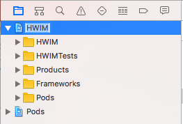
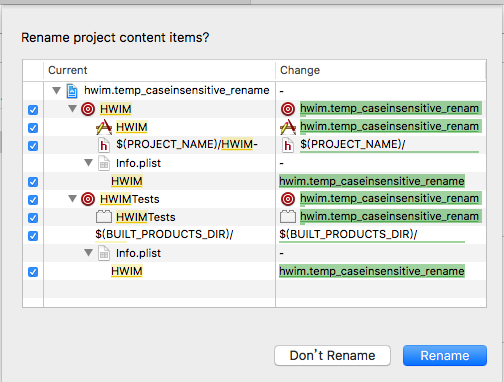
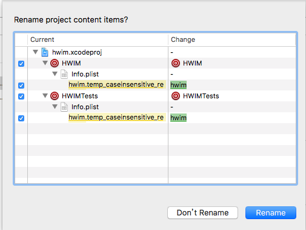
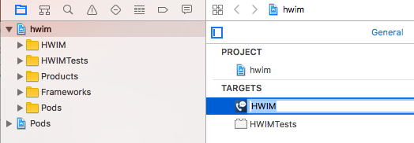
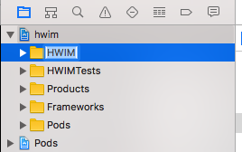
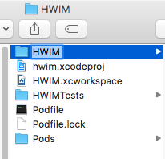

反馈请联系hertz@hertzwang.com,谢谢
示例工程使用 Cocoapods 管理第三方
修改工程名



修改 TARGETS 名称

添加 Scheme
Project -> Scheme -> New Scheme...
修改文件夹名


修改 Podfile 中的 target
注：修改有风险
- 修改 Podfile 中的 target
- 删除工程根目录中的
xx.xcworkspace、Podfile.lock和Pods - 终端打开工程根目录执行
pod install
删除旧文件
Pods/Projects/下的 .aPods/Targets Support Files/Pods-xxx/下的旧配置